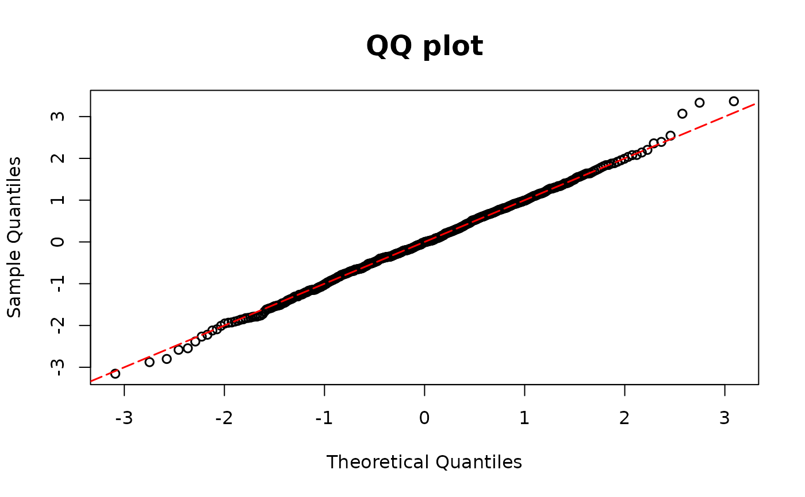

Calculates DPIT proposed residuals for model for semi-continuous outcomes.
resid_2pm can be used either with model0 and model1 or with part0 and part1 as arguments.
Arguments
- model0
Model object for 0 outcomes (e.g., logistic regression)
- model1
Model object for the continuous part (gamma regression)
- y
Semicontinuous outcome variables
- part0
Alternative argument to
model0. One can supply the sequence of probabilities \(P(Y_i=0),~i=1,\ldots,n\).- part1
Alternative argument to
model1. One can fit a regression model on the positive data and supply their probability integral transform. Note that the length ofpart1is the number of positive values inyand can be shorter thanpart0.- plot
A logical value indicating whether or not to return QQ-plot
- scale
You can choose the scale of the residuals among
normalanduniformscales. The default scale isnormal.
Details
The DPIT residuals for regression models with semi-continuous outcomes are $$\hat{r}_i=\frac{\hat{F}(Y_i|\mathbf{X}_i)}{n}\sum_{j=1}^n1\left(\hat{p}_0(\mathbf{X}_j)\leq \hat{F}(Y_i|\mathbf{X}_i)\right), i=1,\ldots,n,$$ where \(\hat{p}_0(\mathbf{X}_i)\) is the fitted probability of zero, and \(\hat{F}(\cdot|\mathbf{X}_i)\) is the fitted cumulative distribution function for the \(i\)th observation. Furthermore, $$\hat{F}(y|\mathbf{x})=\hat{p}_0(\mathbf{x})+\left(1-\hat{p}_0(\mathbf{x})\right)\hat{G}(y|\mathbf{x})$$ where \(\hat{G}\) is the fitted cumulative distribution for the positive data.
In two-part models, the probability of zero can be modeled using a logistic regression, model0,
while the positive observations can be modeled using a gamma regression, model1.
Users can choose to use different models and supply the resulting probability transforms.
part0 should be the sequence of fitted probabilities of zeros \(\hat{p}_0(\mathbf{X}_i) ,~i=1,\ldots,n\).
part1 should be the probability integral transform of the positive part \(\hat{G}(Y_i|\mathbf{X}_i)\).
Note that the length of part1 is the number of positive values in y and can be shorter than part0.
Examples
library(MASS)
n <- 500
beta10 <- 1
beta11 <- -2
beta12 <- -1
beta13 <- -1
beta14 <- -1
beta15 <- -2
x11 <- rnorm(n)
x12 <- rbinom(n, size = 1, prob = 0.4)
p1 <- 1 / (1 + exp(-(beta10 + x11 * beta11 + x12 * beta12)))
lambda1 <- exp(beta13 + beta14 * x11 + beta15 * x12)
y2 <- rgamma(n, scale = lambda1 / 2, shape = 2)
y <- rep(0, n)
u <- runif(n, 0, 1)
ind1 <- which(u >= p1)
y[ind1] <- y2[ind1]
# models as input
mgamma <- glm(y[ind1] ~ x11[ind1] + x12[ind1], family = Gamma(link = "log"))
m10 <- glm(y == 0 ~ x12 + x11, family = binomial(link = "logit"))
resid_2pm(model0 = m10, model1 = mgamma, y = y)
#> [1] -0.895345539 -0.813312355 -1.282612226 0.234626594 0.914094115
#> [6] 0.812867444 0.647139849 1.492559656 0.061602483 -1.529674590
#> [11] -0.057377779 -1.097189451 -1.374782225 0.405518874 -0.262109575
#> [16] -0.348030358 -0.734705861 0.348073300 0.119881011 0.030740280
#> [21] -0.443162700 -1.126158207 0.440006758 -0.834603798 0.580514553
#> [26] 0.619244068 0.453415106 0.960351414 1.567120279 -1.471143127
#> [31] -0.696012821 0.710630023 -0.095073631 -2.509673580 2.709296907
#> [36] -0.521568704 -2.523476137 1.243325747 -0.003537759 0.693197044
#> [41] 0.764729582 0.139105646 1.717566646 0.483490416 0.568944410
#> [46] 0.278826177 -0.203443115 -0.279823648 0.255218562 -0.376074153
#> [51] 0.497052799 2.399033380 0.372343092 -1.123297202 -0.956078468
#> [56] -0.213058829 1.058598160 -0.221435563 -0.873872716 -0.244051145
#> [61] 0.780329742 0.839591571 0.399575944 -0.278924129 -1.965592668
#> [66] 1.271903801 0.669663666 2.048700773 -0.484340748 -1.402188405
#> [71] -0.374828443 -1.010066617 -1.611556551 0.082311740 -2.435928215
#> [76] 3.290343944 -0.306014697 0.804808661 0.120582336 1.170112131
#> [81] -0.636855727 -0.324611771 -0.102213967 -0.411950326 -1.866696668
#> [86] 1.450674311 1.314218629 0.819911395 -0.615046429 -0.869461839
#> [91] 0.639620573 0.847441740 0.241027798 2.102457571 -0.759680807
#> [96] -1.011989305 0.476106502 -0.377069409 -0.549919231 -2.198046351
#> [101] 0.647727975 -1.370562824 -1.376015712 -1.773162214 1.525581043
#> [106] -0.982447615 0.470409052 -0.299674467 1.887951219 -0.376175998
#> [111] 0.921933368 2.165948801 1.541931008 1.090227685 -0.674326277
#> [116] -0.454496177 0.063054375 0.359216743 -0.599031517 1.105844963
#> [121] -0.226737339 1.047218481 -0.251333248 -1.873351487 0.121045841
#> [126] -0.526929419 -0.341039702 -0.161322575 0.406093212 0.035036000
#> [131] -0.540641717 1.959912148 0.462738429 -0.566149413 0.854527357
#> [136] 1.626220801 0.156160031 3.188478447 -0.581019873 -0.554969808
#> [141] 0.559936083 -0.750212932 0.100052035 1.339407911 0.425784068
#> [146] 1.796412430 0.749127101 0.272599756 0.264991717 -2.086463688
#> [151] -0.454589598 -0.388687703 -0.673147271 0.184082737 1.079309759
#> [156] -0.575909601 0.146954356 -2.108422635 0.334886853 0.099382288
#> [161] -1.123499946 0.511310417 -0.249656983 -1.486804496 0.209912819
#> [166] 1.157690208 -0.798112386 0.065152828 2.004575405 -0.290431418
#> [171] -0.532614685 1.356210409 0.342330691 -0.096855538 0.389703241
#> [176] -1.384750886 1.434503190 0.862715213 1.417154101 -0.541717062
#> [181] -0.527381464 0.949543509 0.611402164 -0.011759824 -1.138632615
#> [186] 0.107109788 0.625965265 -1.277056662 0.660145375 -2.025801720
#> [191] 1.740061825 0.897807703 0.713441387 -0.085183667 -0.080742598
#> [196] -1.607079676 -1.010744447 -0.588901926 -0.940560300 1.376297826
#> [201] 0.083134688 0.328965001 0.676341875 1.668245275 1.239931559
#> [206] 0.076609826 1.920875520 0.160420416 -0.635805034 0.939308451
#> [211] -0.329232459 1.296632754 -0.275025652 -1.829727326 1.853171494
#> [216] -1.214832492 0.772184743 0.594576040 0.296384371 0.504222738
#> [221] 0.537183425 -1.395349686 0.699429367 0.870592465 -2.606632275
#> [226] -0.867687374 -0.018206573 -0.554936020 0.101891735 -0.646965990
#> [231] 0.686197057 0.525760445 0.210205569 -0.091456187 -1.710008654
#> [236] -0.320093831 -0.603412033 0.301444043 0.236323234 1.669607780
#> [241] -1.597448089 -1.194470518 -1.397269013 -0.107531698 -0.285607595
#> [246] 1.402261580 0.447647415 -0.745707361 -2.051646069 -0.630183765
#> [251] -1.573816908 0.216488635 -1.501350030 -1.441371888 -0.075138053
#> [256] -0.188426149 0.318175152 -0.848587411 -0.023646226 -1.035288757
#> [261] -0.846515655 -0.590010892 0.005688588 0.126222610 1.409021828
#> [266] -1.014734320 -0.120319845 -1.556347599 -0.502539936 1.823105228
#> [271] -0.409141959 0.092968797 -1.671715732 -1.355356020 0.742831350
#> [276] -1.419944310 0.168756171 1.202903437 0.364069058 0.310839471
#> [281] 1.103293668 -0.928844277 -1.150080941 0.245967885 1.260723574
#> [286] -0.178962225 -0.544231046 0.593413589 0.088087397 1.127077069
#> [291] -1.627013974 0.518618127 -2.516862425 -0.091691466 -0.508664624
#> [296] 1.420312435 0.586558839 -0.326237283 -0.226647325 1.585513522
#> [301] 1.791128236 -0.296476644 2.394740812 0.188489092 -2.343925589
#> [306] 1.508485803 -0.161117033 -1.057198741 -1.024348771 -1.273881288
#> [311] 0.881035960 -0.910644452 -0.566701130 -1.653498111 -0.859901667
#> [316] -0.494882842 -0.067898363 -0.182763108 0.151455266 0.383151928
#> [321] 0.995414342 -0.421518155 -0.698534242 0.370938358 0.611672102
#> [326] 0.796190729 -0.157065407 -1.816755435 -0.880568888 -1.152590991
#> [331] 3.326945820 -1.815913317 -0.634633516 0.702586370 -0.234296937
#> [336] -0.053168632 0.461805982 0.594672256 -0.068982249 1.116772380
#> [341] -0.390677631 0.072501470 -1.171735810 -0.174888492 -0.589315225
#> [346] -0.152837261 -0.567152665 0.531428627 1.239743654 0.104914635
#> [351] -0.986599189 1.691293462 0.400158336 0.296298196 -0.474589004
#> [356] -1.031261633 -0.773216688 0.729854191 -0.272803265 0.612683791
#> [361] -0.367554976 -1.173491528 -0.441970605 -0.431113256 -0.352083863
#> [366] 0.731745172 0.543380675 -1.296563308 1.228186731 2.237205190
#> [371] 2.225441317 -0.581540116 0.005673248 -0.266087583 1.477496734
#> [376] -1.237628736 0.625886763 -0.363700132 -2.109626772 -0.890660887
#> [381] -0.404008620 -0.007897772 -0.397466919 1.003434216 -0.991847645
#> [386] -0.987835326 0.625267641 -0.346233998 -0.626102345 0.283892595
#> [391] 0.829524857 -0.579618318 -0.521767938 0.636636331 0.755803835
#> [396] -0.435429390 1.647991462 0.606263978 -0.310145057 -0.196942529
#> [401] 0.984128199 -0.661814648 -0.880869026 1.014048748 -0.752503407
#> [406] 1.402294370 0.016176385 -1.440350118 -0.042007819 -0.877742318
#> [411] 2.508763180 1.198290287 -0.480742647 -0.906921530 -0.250575600
#> [416] -0.261591184 0.260366544 0.293532230 0.133487318 0.051371790
#> [421] -0.561188833 -0.409021265 -0.796801702 -0.121332267 0.565536246
#> [426] -0.199020380 -0.022308141 -0.188298709 2.305293232 0.553262422
#> [431] -0.212178590 -0.905101873 0.490585662 -0.048942732 -1.715758073
#> [436] 1.036516831 0.104497864 -0.805066121 -1.560571069 0.459941268
#> [441] 1.068197666 -0.914580298 -0.948107240 0.225136225 0.420247724
#> [446] -0.170359908 1.283331871 -0.187257962 0.431175341 1.466907896
#> [451] -0.141440001 -1.302308101 0.646214322 1.342458150 1.247981208
#> [456] -0.789749473 1.468684703 1.184949999 -0.819259910 0.566921643
#> [461] -1.268380793 0.122674260 -0.705991432 0.711290979 0.283509045
#> [466] 0.931777707 -1.544510106 0.420355315 -0.826764621 -0.878948139
#> [471] 0.600635841 -0.652260816 0.342541057 -0.718203268 -0.324861887
#> [476] -0.458663334 1.025936984 1.142343140 0.890177505 1.131449703
#> [481] -0.191167248 -0.646865881 1.326383441 0.972333571 1.605027661
#> [486] -1.076235800 -0.113330308 1.766128317 0.370112330 0.911489400
#> [491] -1.183062494 -1.580699829 1.213705732 -1.273253154 -1.014965368
#> [496] -0.046200893 -0.723903912 -0.964584611 -1.767396254 0.353243183
# PIT as input
cdfgamma <- pgamma(y[ind1],
scale = mgamma$fitted.values * gamma.dispersion(mgamma),
shape = 1 / gamma.dispersion(mgamma)
)
p1f <- m10$fitted.values
resid_2pm(y = y, part0 = p1f, part1 = cdfgamma)

#> [1] -0.895345539 -0.813312355 -1.282612226 0.234626594 0.914094115
#> [6] 0.812867444 0.647139849 1.492559656 0.061602483 -1.529674590
#> [11] -0.057377779 -1.097189451 -1.374782225 0.405518874 -0.262109575
#> [16] -0.348030358 -0.734705861 0.348073300 0.119881011 0.030740280
#> [21] -0.443162700 -1.126158207 0.440006758 -0.834603798 0.580514553
#> [26] 0.619244068 0.453415106 0.960351414 1.567120279 -1.471143127
#> [31] -0.696012821 0.710630023 -0.095073631 -2.509673580 2.709296907
#> [36] -0.521568704 -2.523476137 1.243325747 -0.003537759 0.693197044
#> [41] 0.764729582 0.139105646 1.717566646 0.483490416 0.568944410
#> [46] 0.278826177 -0.203443115 -0.279823648 0.255218562 -0.376074153
#> [51] 0.497052799 2.399033380 0.372343092 -1.123297202 -0.956078468
#> [56] -0.213058829 1.058598160 -0.221435563 -0.873872716 -0.244051145
#> [61] 0.780329742 0.839591571 0.399575944 -0.278924129 -1.965592668
#> [66] 1.271903801 0.669663666 2.048700773 -0.484340748 -1.402188405
#> [71] -0.374828443 -1.010066617 -1.611556551 0.082311740 -2.435928215
#> [76] 3.290343944 -0.306014697 0.804808661 0.120582336 1.170112131
#> [81] -0.636855727 -0.324611771 -0.102213967 -0.411950326 -1.866696668
#> [86] 1.450674311 1.314218629 0.819911395 -0.615046429 -0.869461839
#> [91] 0.639620573 0.847441740 0.241027798 2.102457571 -0.759680807
#> [96] -1.011989305 0.476106502 -0.377069409 -0.549919231 -2.198046351
#> [101] 0.647727975 -1.370562824 -1.376015712 -1.773162214 1.525581043
#> [106] -0.982447615 0.470409052 -0.299674467 1.887951219 -0.376175998
#> [111] 0.921933368 2.165948801 1.541931008 1.090227685 -0.674326277
#> [116] -0.454496177 0.063054375 0.359216743 -0.599031517 1.105844963
#> [121] -0.226737339 1.047218481 -0.251333248 -1.873351487 0.121045841
#> [126] -0.526929419 -0.341039702 -0.161322575 0.406093212 0.035036000
#> [131] -0.540641717 1.959912148 0.462738429 -0.566149413 0.854527357
#> [136] 1.626220801 0.156160031 3.188478447 -0.581019873 -0.554969808
#> [141] 0.559936083 -0.750212932 0.100052035 1.339407911 0.425784068
#> [146] 1.796412430 0.749127101 0.272599756 0.264991717 -2.086463688
#> [151] -0.454589598 -0.388687703 -0.673147271 0.184082737 1.079309759
#> [156] -0.575909601 0.146954356 -2.108422635 0.334886853 0.099382288
#> [161] -1.123499946 0.511310417 -0.249656983 -1.486804496 0.209912819
#> [166] 1.157690208 -0.798112386 0.065152828 2.004575405 -0.290431418
#> [171] -0.532614685 1.356210409 0.342330691 -0.096855538 0.389703241
#> [176] -1.384750886 1.434503190 0.862715213 1.417154101 -0.541717062
#> [181] -0.527381464 0.949543509 0.611402164 -0.011759824 -1.138632615
#> [186] 0.107109788 0.625965265 -1.277056662 0.660145375 -2.025801720
#> [191] 1.740061825 0.897807703 0.713441387 -0.085183667 -0.080742598
#> [196] -1.607079676 -1.010744447 -0.588901926 -0.940560300 1.376297826
#> [201] 0.083134688 0.328965001 0.676341875 1.668245275 1.239931559
#> [206] 0.076609826 1.920875520 0.160420416 -0.635805034 0.939308451
#> [211] -0.329232459 1.296632754 -0.275025652 -1.829727326 1.853171494
#> [216] -1.214832492 0.772184743 0.594576040 0.296384371 0.504222738
#> [221] 0.537183425 -1.395349686 0.699429367 0.870592465 -2.606632275
#> [226] -0.867687374 -0.018206573 -0.554936020 0.101891735 -0.646965990
#> [231] 0.686197057 0.525760445 0.210205569 -0.091456187 -1.710008654
#> [236] -0.320093831 -0.603412033 0.301444043 0.236323234 1.669607780
#> [241] -1.597448089 -1.194470518 -1.397269013 -0.107531698 -0.285607595
#> [246] 1.402261580 0.447647415 -0.745707361 -2.051646069 -0.630183765
#> [251] -1.573816908 0.216488635 -1.501350030 -1.441371888 -0.075138053
#> [256] -0.188426149 0.318175152 -0.848587411 -0.023646226 -1.035288757
#> [261] -0.846515655 -0.590010892 0.005688588 0.126222610 1.409021828
#> [266] -1.014734320 -0.120319845 -1.556347599 -0.502539936 1.823105228
#> [271] -0.409141959 0.092968797 -1.671715732 -1.355356020 0.742831350
#> [276] -1.419944310 0.168756171 1.202903437 0.364069058 0.310839471
#> [281] 1.103293668 -0.928844277 -1.150080941 0.245967885 1.260723574
#> [286] -0.178962225 -0.544231046 0.593413589 0.088087397 1.127077069
#> [291] -1.627013974 0.518618127 -2.516862425 -0.091691466 -0.508664624
#> [296] 1.420312435 0.586558839 -0.326237283 -0.226647325 1.585513522
#> [301] 1.791128236 -0.296476644 2.394740812 0.188489092 -2.343925589
#> [306] 1.508485803 -0.161117033 -1.057198741 -1.024348771 -1.273881288
#> [311] 0.881035960 -0.910644452 -0.566701130 -1.653498111 -0.859901667
#> [316] -0.494882842 -0.067898363 -0.182763108 0.151455266 0.383151928
#> [321] 0.995414342 -0.421518155 -0.698534242 0.370938358 0.611672102
#> [326] 0.796190729 -0.157065407 -1.816755435 -0.880568888 -1.152590991
#> [331] 3.326945820 -1.815913317 -0.634633516 0.702586370 -0.234296937
#> [336] -0.053168632 0.461805982 0.594672256 -0.068982249 1.116772380
#> [341] -0.390677631 0.072501470 -1.171735810 -0.174888492 -0.589315225
#> [346] -0.152837261 -0.567152665 0.531428627 1.239743654 0.104914635
#> [351] -0.986599189 1.691293462 0.400158336 0.296298196 -0.474589004
#> [356] -1.031261633 -0.773216688 0.729854191 -0.272803265 0.612683791
#> [361] -0.367554976 -1.173491528 -0.441970605 -0.431113256 -0.352083863
#> [366] 0.731745172 0.543380675 -1.296563308 1.228186731 2.237205190
#> [371] 2.225441317 -0.581540116 0.005673248 -0.266087583 1.477496734
#> [376] -1.237628736 0.625886763 -0.363700132 -2.109626772 -0.890660887
#> [381] -0.404008620 -0.007897772 -0.397466919 1.003434216 -0.991847645
#> [386] -0.987835326 0.625267641 -0.346233998 -0.626102345 0.283892595
#> [391] 0.829524857 -0.579618318 -0.521767938 0.636636331 0.755803835
#> [396] -0.435429390 1.647991462 0.606263978 -0.310145057 -0.196942529
#> [401] 0.984128199 -0.661814648 -0.880869026 1.014048748 -0.752503407
#> [406] 1.402294370 0.016176385 -1.440350118 -0.042007819 -0.877742318
#> [411] 2.508763180 1.198290287 -0.480742647 -0.906921530 -0.250575600
#> [416] -0.261591184 0.260366544 0.293532230 0.133487318 0.051371790
#> [421] -0.561188833 -0.409021265 -0.796801702 -0.121332267 0.565536246
#> [426] -0.199020380 -0.022308141 -0.188298709 2.305293232 0.553262422
#> [431] -0.212178590 -0.905101873 0.490585662 -0.048942732 -1.715758073
#> [436] 1.036516831 0.104497864 -0.805066121 -1.560571069 0.459941268
#> [441] 1.068197666 -0.914580298 -0.948107240 0.225136225 0.420247724
#> [446] -0.170359908 1.283331871 -0.187257962 0.431175341 1.466907896
#> [451] -0.141440001 -1.302308101 0.646214322 1.342458150 1.247981208
#> [456] -0.789749473 1.468684703 1.184949999 -0.819259910 0.566921643
#> [461] -1.268380793 0.122674260 -0.705991432 0.711290979 0.283509045
#> [466] 0.931777707 -1.544510106 0.420355315 -0.826764621 -0.878948139
#> [471] 0.600635841 -0.652260816 0.342541057 -0.718203268 -0.324861887
#> [476] -0.458663334 1.025936984 1.142343140 0.890177505 1.131449703
#> [481] -0.191167248 -0.646865881 1.326383441 0.972333571 1.605027661
#> [486] -1.076235800 -0.113330308 1.766128317 0.370112330 0.911489400
#> [491] -1.183062494 -1.580699829 1.213705732 -1.273253154 -1.014965368
#> [496] -0.046200893 -0.723903912 -0.964584611 -1.767396254 0.353243183